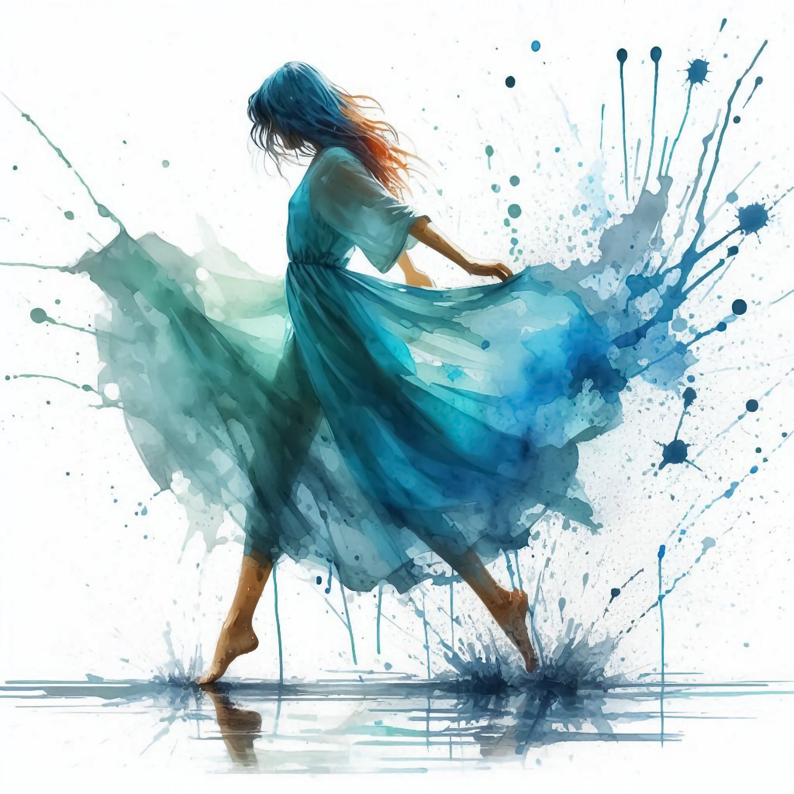

Curso
Bionumerología
Base 22
Descubre quién eres a través de los números
Cómo usar
este material
Tres puntos para aprovechar
al máximo cada clase.
Prepara tu espacio — un lugar tranquilo, sin interrupciones. Una vela, tu cuadernillo y un vaso de agua son todo lo que necesitas.
Usa tu cuadernillo — tiene los espacios exactos para cada cálculo. Anota solo lo que resuene contigo en el momento.
Sé presente — cierra otras ventanas, silencia el teléfono y date permiso de estar aquí.
Anota tus dudas — si algo no queda claro, escríbelo. Volvemos a ellas al final de cada bloque.
Bionumerología
Base 22
Una herramienta de autoconocimiento que trabaja con 22 números para revelar tu esencia, patrones emocionales heredados y propósito de vida.
∞
Cada número tiene una vibración única que influye en tu personalidad y tus decisiones
Trabaja desde lo emocional hasta lo transgeneracional
Es un espejo energético que refleja tu historia y tus oportunidades de evolución
Los números no se han inventado. Siempre han existido de forma intrínseca en el inconsciente humano.
— Carl Gustav Jung
∞
¿Por qué los números?
Son arquetipos de orden universal — patrones que organizan la realidad
Son el puente entre lo consciente y el inconsciente colectivo
Base 9 vs Base 22
Trabaja del 1 al 9
Enfoque cíclico
Aspectos generales de vida
Del 1 al 22 + números maestros
Mapa preciso de identidad
Desafíos específicos de cada persona
La Base 22 revela lo que la Base 9 no alcanza a ver
El cuerpo habla
lo que la emoción calla
El desequilibrio empieza en lo emocional antes de manifestarse físicamente. Identifica el conflicto antes de que se convierta en síntoma.
De los griegos
a hoy
Tres momentos clave en la historia de la numerología
∞
Griegos y hebreos: primeros sistemas numerológicos de la historia
Gnósticos y el Cristianismo: asocian letras con números, nace la numerología occidental
Hoy: integrada con la biología emocional y el transgeneracional
que te definen
Día · Mes · Año
Carácter interno — lo que no siempre se percibe desde afuera. Se toma directamente.
El número que elegimos para encarnar. Nuestra propia identidad. Se toma directamente.
Carácter exterior — claramente perceptible desde afuera. Se reduce a Base 22.
Reglas fundamentales
de Base 22
Tres reglas que gobiernan cada cálculo en todo el sistema.
Si el resultado es mayor a 22 → reducir sumando sus dígitos.
Ej: 25 → 2+5 = 5
Si en cualquier paso aparece un 0 → se reemplaza por 22.
Números Maestros 26, 33 y 40 → NO se reducen.
Se expresan en fracción: 26/8 · 33/6 · 40/4
Para operar con ellos, usar siempre su reducción.
Dos preguntas
antes de cada cálculo
Estas dos preguntas guían cada paso del sistema.
Si es mayor → reducir sumando sus dígitos
Si lo es → mantener en fracción, operar con su reducción
Cómo reducir el
Año de Nacimiento
El Año siempre se reduce sumando sus dígitos hasta llegar a Base 22.
El Día y el Mes se toman directamente.
7
Dos ejemplos paso a paso
La Carta Bionumerológica
16 pilares que revelan tu identidad, energía y recursos internos
Esencia · Interior · Oculta
No es algo visible a simple vista. Es la personalidad oculta, más interior y efectiva.
Amor · Emoción · Fragilidad
El pilar más frágil — toda dolencia comienza en lo emocional antes de llegar al cuerpo.
Las emociones, si no se gestionan, pueden convertirse en origen de desequilibrios.
Sociales
Interior · Exterior · Vínculos
Cómo me comporto dentro del núcleo familiar o entornos cercanos. Mi forma natural de interactuar con mis seres queridos.
Cómo me muestro al mundo exterior — amigos, vacaciones, salidas. Mi imagen social fuera del núcleo familiar.
Imagen · Vocación · Exterior
Es la fusión de la energía interior (CIS) y la energía exterior (CES).
Recarga · Conciencia · Cotidiano
Lo que antes se hacía instintivamente, ahora se hace con conciencia.
y Espiritualidad
Liberación · Espíritu · Terapia
Herramienta terapéutica para liberar emociones bloqueadas. Muy frágil — puede ser el primer punto de entrada de la enfermedad.
La llave. Ayuda a expresarse naturalmente y abre el espíritu. Herramienta clave para desbloquear el sistema.
Conflicto · Agresión · Psicosomático
Si no se respeta esta energía, se sobrepasa el límite tolerable y llega el shock biológico.
Crisis · Salvavidas · Resurface
El más importante en momentos de crisis.
interior y exterior
Defensa · Protección · Recursos
Recurso para desbloquear el NE cuando las emociones se estancan.
Cómo me defiendo interiormente cuando el CIS está bloqueado.
Cómo me defiendo exteriormente cuando el CES está bloqueado.
de emergencia
Huida · Escape · Último recurso
⚠ Si el resultado es 0 en cualquier paso → se convierte en 22
Acciones necesarias para desbloquear la Personalidad Integrada.
Último recurso cuando todas las estrategias han fallado. Lo que necesita para volver al Espejo.
Remedio de urgencia para salir de lo que nos abruma antes de caer más hondo.
Independencia · Liderazgo · Inicio
Energía pionera con capacidad de abrir caminos. Necesidad de autonomía — no le gusta depender de otros. Liderazgo natural que inspira y no teme los riesgos.
Egocentrismo. Conflictos con figuras de autoridad. Dificultad para aceptar el liderazgo ajeno. Puede volverse controlador.
Dualidad · Receptividad · Empatía
Profunda empatía y conexión con la sabiduría interior. Busca armonía y comprensión profunda. Capacidad de captar señales y leer entre líneas.
Fragilidad emocional. Dependencia afectiva. Dificultad para mantenerse estable sin el otro.
Mente · Intelecto · Explicación
Profundamente mental — necesita comprender y explicar todo. Facilidad para la autoexpresión a través de palabras, arte o proyectos intelectuales. No teme hablar en público.
Miedo a la crítica. Inhibición creativa. Represión intelectual. Bloqueo de la autoexpresión.
Estructura · Método · Límites
Necesita claridad, límites y estructuras para sentirse seguro. Meticuloso y organizado — el primero en respetar horarios y protocolos. Valora las explicaciones lógicas.
Rigidez. Resistencia al cambio. Exceso de control. Dificultad para adaptarse a lo inesperado.
Seguridad · Principio · Moralidad
Su vida se basa en un marco sólido de principios filosóficos, espirituales o ideológicos. El espacio exterior refleja el estado interior. Busca seguridad y territorio propio.
Rigidez en principios. Resistencia al cambio. Aferrarse demasiado a rutinas y espacio personal.
Juego · Inocencia · Alegría
Alegría pura del momento presente. Creatividad espontánea e inclinación natural por el cuidado. Necesita reír, jugar e improvisar. Busca disfrutar el presente con inocencia.
Heridas de infancia no resueltas. Rigidez emocional. Desconexión de la alegría propia.
Dominio · Decisiones · Mental analítico
Necesita comprender el "por qué" de cada situación. Mantiene todo bajo control — emociones, decisiones y entorno. Busca soluciones concretas. Tendencia a la introspección y al aislamiento voluntario para reflexionar.
Controlador. Desconfiado. Emocionalmente reservado. Aislamiento cuando se siente fuera de control.
Equilibrio · Poder · Estrategia
Líder natural. Busca equilibrio entre lo terrenal y lo espiritual. Planifica cada paso tomando en cuenta el dinero, lo emocional y lo espiritual. Protector de sus seres queridos.
Obsesión con el dinero o el poder. Descuido del lado emocional o espiritual.
Altruismo · Eternidad · Naturaleza
Expansión y conexión espiritual. Servicio hacia los demás. Necesidad de trascender lo material y dejar un impacto positivo en el mundo. Conectado con el inconsciente colectivo.
Desconexión de la realidad. Evasión en pensamientos idealistas. Asumir demasiadas responsabilidades sin límites claros.
Inseguridad · Movimiento · Riesgos
Energía dinámica que impulsa la acción. Necesitan ser valorados — especialmente por sus padres. Capacidad de adaptación y resiliencia. Se desafían a sí mismos para encontrar su centro.
Inseguridad profunda. Dificultad para confiar en sí mismo. Compensan conectándose con la espiritualidad.
Canal · Secreto · Intuición
Conexión entre lo terrenal y lo espiritual. Altamente intuitivo. Sensibilidad aguda para percibir energías sutiles. Versión femenina: canal de energía que percibe auras con facilidad.
Duda de sus propias percepciones. Dificultad para confiar en la intuición.
Servicio · Devoción · Cuidado
Su propósito es servir. Generoso y compasivo — fuerte sentido del deber hacia su entorno. Destaca en profesiones de servicio, sanación y cuidado.
Autosacrificio. Agotamiento emocional. Olvidarse completamente de sí mismo.
Renacer · Curación · Muerte simbólica
La máxima evolución a través de transformaciones profundas. El dolor como maestro. Capacidad innata de sobreponerse y construir algo nuevo a partir de las crisis.
Resistencia al cambio. Aferrarse al pasado. Victimismo. Caer en la co-creación de la realidad sin asumirla.
Fluir · Soltar · Compasión
Flujo continuo y capacidad de adaptarse. La autodisciplina les ayuda a manejar sus impulsos. Don para comunicar desde lo sutil, especialmente en áreas emocionales.
Apego al pasado. Dificultad para perdonar. Resistencia al cambio.
Intensidad · Sensualidad · Iluminación
Fuerza vital poderosa. Todo se rige por la pasión y la intensidad. Necesita un canal adecuado para su energía. Simboliza la lucha entre los deseos instintivos y las aspiraciones espirituales.
Impulsividad. Excesos. Vacío emocional si no puede expresar su pasión.
Orgullo · Exactitud · Número de oro
Perfeccionista y detallista. Audacia ante los desafíos. Busca la precisión y la estructura. Vive el desafío y la necesidad de superar retos constantemente.
Obsesión con el poder y el control. Orgullo que bloquea el crecimiento personal.
Amistad · Contacto · Sensibilidad
Conexión emocional sincera y profunda. La amistad juega un papel central en su vida. Se recarga a través del afecto y las relaciones cálidas. Busca rodearse de ambientes armoniosos.
Dependencia del afecto externo. Olvidar la propia fortaleza interna.
Inconsciente · Pasado · Psicología
Fuerte conexión con el inconsciente colectivo. Profunda comprensión de las emociones y motivaciones de los demás. Representa la luna — todo lo que no se ve a simple vista.
Miedos ocultos sin confrontar. Bloqueos emocionales del pasado sin liberar.
Armonía · Autoridad · Sol
Vitalidad y conexión con la figura paterna. Versión masculina: autoridad y ego. Versión femenina: paz, armonía y calma. Necesita momentos de silencio para recargarse.
Ego excesivo. Hijos atrapados en rol infantil. Invasión del espacio de paz.
Validación · Misterio · Transformación
Vida pública carismática y vida privada llena de inseguridades. Fuerte atracción por lo desconocido y lo oculto. Necesita liberarse de condicionamientos y lealtades familiares.
Búsqueda constante de validación externa. Condicionamientos familiares que no puede soltar.
Armonía global · Belleza · Estética
Conexión con lo sublime. Integración de lo masculino y lo femenino en perfecta armonía. Busca rodearse de paz, naturaleza y arte. Visión amplia del mundo.
Perfeccionismo extremo. Caída en la desarmonía cuando no encuentra equilibrio.
Grandeza · Visión universal · Extravagancia
El arquitecto de la vida. Capacidad de construir grandes proyectos con visión visionaria que trasciende lo convencional. Sin bases sólidas puede caer en el aislamiento.
Sin base sólida → aislamiento. Desconexión de la realidad. Puede caer en enfermedad mental.
Salud · Equilibrio · Medicina
Conexión natural con el bienestar propio y ajeno. Siempre terminan conectados con el bienestar de otros. Esponjas energéticas que captan las emociones del entorno.
Absorbe las cargas ajenas. Se agota cuidando a otros. Puede enfermar como forma inconsciente de equilibrar la energía.
Estrés o desbalance emocional · Dificultades en el sistema inmunológico · Sentimiento de vacío
Compasión · Hipersensibilidad · Energía crística
Maestro del amor universal. Transforma vidas con su sola presencia. Guía con el ejemplo — no impone. Su vibración genera cambios significativos a nivel colectivo.
Agotamiento extremo por absorber el sufrimiento ajeno. Desórdenes emocionales. Delirio místico.
Tensión muscular en espalda y cuello · Problemas en la garganta
Gestión · Liderazgo · Organización
La cuarentena — purificación y renovación. Acompaña a otros en sus momentos más oscuros sin miedo al dolor ni a la muerte. Mente estructurada con capacidad excepcional de organización.
Fatiga crónica. Dolor de cabeza o tensión muscular. Se olvida de sus propios límites.
Fatiga crónica · Dolor de cabeza · Tensión muscular
Cómo se lee el número en la PP
La PP es la base — el primer pilar que se lee en cualquier carta. Con solo este número ya tenemos la estructura interna de la persona.
Si el número también aparece en el Mes (Identidad), el significado es muy similar.
Necesita sentirse en control de su entorno y sus decisiones. Es su esencia interior.
Su propósito es servir — si pone siempre a otros primero, se sacrifica.
Destino grandioso — sin base sólida puede perderse en su mente.
Necesita aprender constantemente — sin estimulación intelectual se estanca
Planifica cada paso — no deja nada al azar
Requiere estructura y estabilidad — todo debe estar bien encuadrado
Necesita estar en sintonía con el universo para sentirse bien
Su visión de vida está basada en un marco sólido de principios
Su gran desafío es la inseguridad — compensa con espiritualidad
Necesita espacios para jugar, reír y expresarse sin preocupaciones
Versión masculina: fuerte autoridad / Versión femenina: canal de energía
Necesita sentirse en control de su entorno y sus decisiones
Su propósito es servir — si pone siempre a otros primero, se sacrifica
Conectado con su mundo interior y lo oculto
Su vida está marcada por cambios y transformaciones constantes
Versión masculina gran jefe / Versión femenina busca paz y armonía
Su aprendizaje es soltar — material, emocional y mental
Vida gira en torno al reconocimiento y la validación
Todo se rige por la pasión y la intensidad
Busca la armonía en todos los aspectos de la vida
Busca la precisión y el desafío constante
Destino grandioso — sin base sólida puede perderse en su mente
Necesita contacto físico, caricias, cercanía de sus amigos
Cómo se lee el número en el NE
En el NE están las emociones profundas — cómo amas y cómo te sientes amada. Es el pilar más frágil y el más terapéutico.
Toda dolencia comienza en lo psíquico antes de manifestarse en el cuerpo. En terapia: es el primer lugar donde buscar el conflicto emocional.
Cuando el NE está en el BE, la persona puede sentir frustración si no logra expresar esa energía emocional con claridad.
Herramienta en sesión: preguntar cómo se siente amada, cómo expresa el amor — ahí aparece el NE vivo.
Necesita estímulos intelectuales — un libro o conferencia lo nutre emocionalmente
Conexión profunda con el poder, el dinero y la planificación
Requiere estabilidad, orden y lógica — su reto es no volverse rígido
Encuentra bienestar en la naturaleza y los grandes paisajes
Bienestar depende del entorno — si su espacio está en caos, su salud se ve afectada
Lucha constante con la inseguridad — su refugio es la espiritualidad
La risa es su medicina — historias graciosas y situaciones divertidas lo recargan
Alta sensibilidad a energías — percibe lo que el otro siente sin palabras
Controla sus emociones — en terapia hay que ayudarlo a liberar y confiar en lo que siente
Su propósito es ayudar — debe aprender a poner límites para no caer en el sacrificio
Conexión profunda con el inconsciente y lo simbólico
Su frase recurrente es "esto es duro" — siempre en proceso de cambio
Necesita armonía — en su lado masculino puede ser dictatorial si se siente invadido
Lección de vida es soltar — el trabajo energético lo mantiene equilibrado
Mayor necesidad es sentirse valorado — busca reconocimiento si no lo recibió en la infancia
Necesita una pasión para vivir — si no la tiene, puede volcarse a la sexualidad o el deporte
Bienestar en la armonía y la conexión con el mundo
Lado masculino busca perfección / Lado femenino vive el desafío constante
Visión grandiosa — sin base puede perderse en sus ideas
Bienestar depende del afecto — caricias y compañía de amigos lo recargan
Cómo se lee el número en la PI
La PI muestra tu identidad exterior — cómo te proyectas profesionalmente. Lo que debe estar presente en tu vocación o trabajo.
Es la imagen que proyectas al mundo social y profesional. Se lee siempre en contexto con la PP.
Auditoría, informática, contabilidad — ambientes con protocolos estrictos.
Terapia energética, masajes, canalización vibracional.
Finanzas, gestión, administración de empresas.
Escritura, investigación, docencia
Asistencia social, enfermería, voluntariado
Periodismo, historia, diplomacia
Enseñanza, arquitectura, ingeniería
Acompañamiento en crisis, rehabilitación
Empresas, proyectos espirituales de gran escala
Diseño, decoración de interiores, arte
Coaching, terapias de sanación, liberación de patrones
Medicina, nutrición, terapia alternativa
Actividades con niños, entretenimiento, comedia
Cualquier profesión que motive profundamente
Guía espiritual, roles de impacto en la humanidad
Auditoría, informática, protocolos estrictos
Arquitectura, matemática, ingeniería — excelencia y precisión
Salud, apoyo en enfermedades graves, crisis humanitarias
Banca, bienes raíces, administración de empresas
Terapias manuales, masajes suaves, relaciones interpersonales
Viajes, geografía, turismo, entornos naturales
Psicología, psicoanálisis, investigación del subconsciente
Seguridad personal, espiritualidad, propósito superior
Bienestar, arte, diseño de ambientes, armonía
Terapia energética, masajes, canalización vibracional
Investigación, criminología, análisis forense
Cómo se lee el número en la BA
La BA es el medicamento diario — lo que te recarga si lo haces con plena conciencia todos los días.
No es opcional ni esporádico: es un compromiso con uno mismo. Lo que antes se hacía instintivamente, ahora se hace con conciencia.
Si no se alimenta el BA, el sistema empieza a desajustarse.
Hacer la BA no es un extra de bienestar — es la base que mantiene activos todos los pilares del Espejo. Sin BA, la carta pierde fuerza.
BA = 9: Salir al exterior, contemplar paisajes, respirar aire fresco cada día.
Dedicar tiempo a la lectura y adquisición de conocimiento diariamente
Enfocarse en la evolución, aceptar los cambios
Organizar el día de manera lógica, establecer bases sólidas
Practicar el desapego, liberar lo que ya no es útil
Mantener el orden y la armonía en el hogar y en el interior
Experimentar la pasión a través de la sexualidad, el ejercicio o actividades intensas
Buscar la risa y el disfrute cada día — si no surge, rodearse de quienes la promuevan
Buscar la excelencia sin caer en la obsesión — tener siempre un objetivo claro
Establecer sentido de control sobre la propia vida sin caer en rigidez
Cultivar la amistad, dar y recibir afecto
Mantener balance entre dinero, poder y espiritualidad
Reflexionar sobre la mente y las emociones, explorar psicología o filosofía
Salir al exterior, contemplar paisajes, respirar aire fresco
Crear un entorno de paz — si algo lo altera, tomar un momento de aislamiento
Buscar seguridad interna, conectarse con espacios sagrados o energéticos
Reconocerse a sí mismo, valorar los propios logros
Estar en contacto con la intuición, desarrollar la percepción sutil
Mantener una visión global, interesarse por el mundo y las culturas
Ayudar a los demás con generosidad pero estableciendo límites
Sostener cada día un gran propósito que motive y guíe el camino
Cómo se lee el número en el NR
El NR revela cómo fuiste agredida — el conflicto que detonó el proceso psicosomático. El número clave en descodificación biológica.
Si no se respeta esta energía, se sobrepasa el umbral tolerable y llega el shock biológico.
La frase del NR
Cada número tiene una frase de transgresión — describe el conflicto vivido. Es el "scud" que impactó y abrió la herida.
NR = 7: "Mi forma de gestionar y mantener el control fue vulnerada."
"Mi capacidad intelectual fue dañada — no confío en mis habilidades"
"Se me negó la posibilidad de evolucionar y cambiar"
"Mi estructura interna fue fragmentada — me falta estabilidad"
"No logré soltar lo que necesitaba dejar ir"
"Mis principios fundamentales fueron irrespetados"
"Me restringieron en la expresión de mi pasión y deseo"
"Mi niño interior fue ignorado o reprimido"
"Mi orgullo fue desafiado, mis esfuerzos invalidados"
"Mi forma de gestionar y mantener el control fue vulnerada"
"Fui privada del contacto con mis amigos"
"No me permitieron equilibrio entre finanzas, planes y bienestar"
"No pude desarrollar mis capacidades psíquicas"
"Bloquearon mi libertad de movimiento y expansión"
"Mi espacio de paz y armonía fue invadido"
"Me encuentro en inseguridad extrema, sin protección"
"Fui desvalorizada, poco apreciada o reconocida"
"Me hicieron dudar de lo que siento y percibo"
"Cortaron mi capacidad de conectar con el todo"
"No se me permitió cuidar de los demás aunque era mi deseo genuino"
"No confían en mí — eso debilitó mi seguridad personal"
Cómo se lee el SOS
Cuando alguien está muy afectada y siente que se hunde. Este número es lo que la ayuda a salir a flote antes de hundirse del todo.
Es el salvavidas más inmediato — lo que la persona puede hacer aquí y ahora.
Conectar con el niño interior — buscar el juego, la risa, la ligereza.
Viajar o conectar con la naturaleza — ampliar la perspectiva.
Buscar el contacto con amigos — el afecto como ancla.
Cómo se lee el NH
El último recurso. Cuando todo lo demás ha fallado. Es lo que necesita para volver al Espejo desde la Máscara.
Se usa solo cuando el SOS no fue suficiente y la persona sigue en crisis profunda.
Sumergirse en el conocimiento — estudiar, aprender, nutrir la mente.
Recuperar el control sobre al menos un aspecto de la vida.
Descubrir la fuerza interior — recordar la grandeza que hay en uno mismo.
Necesita sentirse en control de su entorno y sus decisiones. Es su naturaleza más profunda — lo que siempre ha sido aunque no lo muestre.
Controla sus emociones. En terapia hay que ayudarlo a liberar y confiar en lo que siente — la emoción aquí está guardada bajo llave.
Se orienta hacia auditoría, informática, contabilidad — ambientes con protocolos estrictos donde el control es parte del rol.
"Mi forma de gestionar y mantener el control fue vulnerada." Esta es la herida que abrió el proceso.
El número no cambia. Lo que cambia es cómo se manifiesta en cada pilar.
La persona elige la opción que le resulte más fácil en ese momento. Ambas son válidas.
Cuando el número del pilar principal no da una solución clara para la persona
Cuando en lectura mínima de conflicto el NE no está claro
También se pueden usar en el NR para encontrar el conflicto con más precisión
En cualquier paso intermedio → se convierte en 22 y se continúa operando. Si el resultado final es 0 → el pilar toma el valor 22.
Se toma el valor absoluto — el número sin el signo negativo.
La energía del número está bloqueada o en exceso
La energía fue reprimida externamente — familia, cultura, experiencias
La energía no se ha activado aún, está latente
Ante la duda: revisar los cálculos y las fechas antes de interpretar. El número no cambia — lo que cambia es cómo se manifiesta en cada persona.
Se analiza la carta completa en el orden establecido
Foco en pilares específicos según el tema
Pilares relacionados con identidad y proyección externa
Siempre se comienza por la PP — es la base de toda interpretación
La lectura completa es para sesiones de autoconocimiento sin un conflicto específico
Orejas de Mickey si no está claro
Revela el conflicto desencadenante
Clave: identificar en qué estado de equilibrio está la persona antes de interpretar
Esencia y orientación personal
Base estructural en lo profesional
Proyección externa y expresión en la profesión
Agregar NE (Orejas de Mickey) si hay dudas sobre la orientación
Cómo gestionan las emociones y el vínculo afectivo
Cómo encontrar equilibrio en la relación
Cómo desbloquear problemas y mejorar la conexión
Solo en relaciones de trabajo o negocio